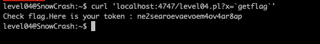

Level04
Etape 1 :
Regarder les fichiers dans le home de l'utilisateur
commande : ls -la
on peut voir un fichier Level04.pl

Etape 2 :
Regarderle fichier
on peut voir : localhost:4747 et content-type html ce qui veut dire que cest un serveur web
deplus il prend un argument
Etape 3 :
on utilise curl pour reatch le serveur et on teste une commande comme ls
on peut voir que le programme execute la commande ls en temps de flag04
Etape 4 :
on lui demande d'executer getflag
